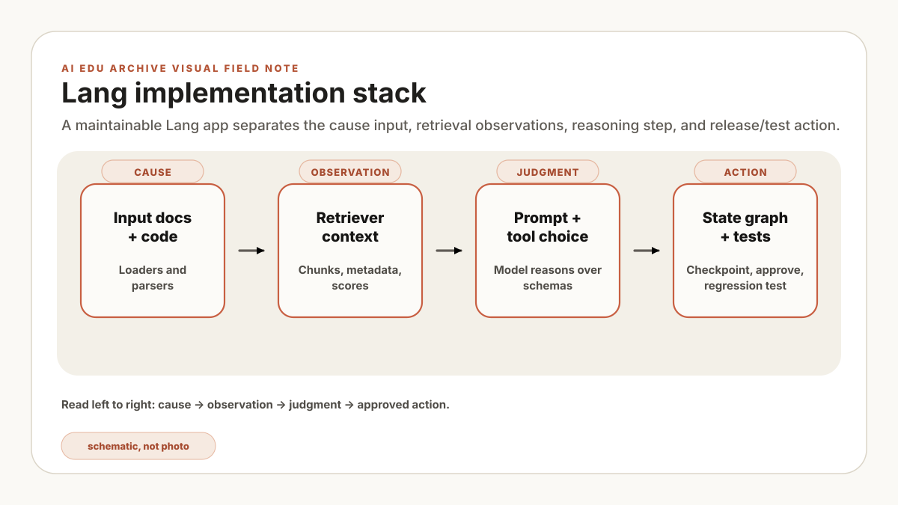

설명을 위해 단순화한 가상 사례입니다. 첫 입력은 “CVD-07 reflected power 알람을 한 줄로 요약하라”는 로그 문자열이어서 chat model·prompt·parser만으로 충분했습니다. 다음 시험에서 사용자가 “최신 SOP의 확인 순서도 인용하라”고 하자 답은 자연스러웠지만 출처가 없었습니다. 이 관찰 뒤 loader·splitter·retriever를 추가했고, 현재 장비 상태 조회는 읽기 전용 tool로 분리했습니다. 승인 대기가 생긴 뒤에야 LangGraph를 붙였습니다. 요구가 확인될 때마다 경계를 늘렸기 때문에 실패 위치를 좁힐 수 있었지만, 모듈을 나눈다고 원문 품질이나 모델 정확도가 자동으로 좋아지지는 않습니다.
기술 권고. 현재 입력만으로 답할 수 없는 이유를 먼저 한 문장으로 적으세요. 문서 근거가 없으면 RAG를, 현재 값이나 계산이 필요하면 도구를, 분기·재시도·승인 대기가 생기면 그래프를 추가합니다. 이는 특정 사업장의 운영 경험이 아니라 구성요소를 고르기 위한 설계 기준입니다.
Lang 생태계에서 어려운 점은 API 이름보다 package별 책임을 구분하는 일입니다. model 호출, prompt 구성, output parsing, 문서 검색, tool 실행, graph orchestration을 나눠 보면 각 모듈은 평범한 Python 경계로 읽힙니다.
단순 model call은 언어 변환을 담당합니다. 문서에서 근거를 찾아야 하면 retrieval을, 현재 시스템 값을 읽거나 계산해야 하면 tool을, 승인과 재시도가 있는 업무에는 graph state를 더합니다. 이 글은 기능을 한꺼번에 쌓는 법보다 어떤 관찰 뒤에 다음 모듈을 선택할지 설명합니다.
모듈 지도
코드를 쓰기 전에 아래 표에서 입력, 출력, 책임을 먼저 확인하세요. import 경로는 버전에 따라 달라질 수 있지만 각 모듈이 맡는 경계는 설계를 검토하는 기준으로 남습니다.
| 모듈 | 무엇을 하는가 | 언제 쓰는가 |
|---|---|---|
| langchain-core | 메시지, 프롬프트, 출력 파서, 실행 단위, 도구, 문서의 공통 추상화를 제공합니다. | 체인을 조합하거나 도구를 정의할 때 씁니다. 대부분의 LangChain 애플리케이션이 이 모듈을 기반으로 합니다. |
| langchain-openai, langchain-ollama 등 | 제공업체별 채팅 모델과 임베딩을 연결합니다. | 외부 모델 제공업체나 로컬 모델 서버를 호출할 때 씁니다. |
| langchain-community | 로더, 벡터 저장소, 도구, 보조 기능 등 커뮤니티 연동 기능을 제공합니다. | 핵심 모듈에 없는 연동 기능이 필요할 때 씁니다. |
| langchain-text-splitters | 문서를 검색 가능한 조각으로 나눕니다. | RAG에서 안정적인 검색 단위를 만들 때 씁니다. |
| langgraph | 상태를 유지하며 여러 단계와 순환 경로를 처리하는 에이전트 흐름을 구성합니다. | 기억, 조건 분기, 승인, 재시도, 장기 실행 상태가 필요할 때 씁니다. |
재사용 가능한 interface는 대개 langchain-core에 있고, vendor나 외부 시스템 연결은 provider 또는 community package가 맡습니다. state와 branch가 필요한 workflow는 LangGraph의 영역입니다. 설치 전에 공식 문서에서 현재 package 경로와 지원 버전을 확인하세요.
무엇을 만들 수 있는가
import 목록보다 먼저 만들려는 작업의 입력과 권한을 정하세요. 아래 예시는 이 글의 모듈을 조합해 만들 수 있는 작업과 필요한 경계를 보여줍니다.
| 프로젝트 | 무엇을 하는가 | 주요 모듈 |
|---|---|---|
| 로컬 문서 질의응답 | 설명서, PDF, 마크다운 메모, SOP 폴더를 근거로 질문에 답합니다. | 로더, 분할기, 임베딩, 벡터 저장소, 검색기, 프롬프트 |
| 회의록 요약기 | 정리되지 않은 회의 기록에서 결정 사항, 할 일, 위험 요소를 추립니다. | 프롬프트 템플릿, 채팅 모델, 출력 파서, 구조화 출력 |
| 기술 문제 해결 도우미 | 알려진 문제와 해결 기록을 검색해 다음 확인 항목을 제안합니다. | 검색기, 재순위화 방식, 도구, LangGraph 경로 선택 노드 |
| 로컬 코딩 도우미 | 저장소를 설명하고 패치 초안을 만든 뒤 제한된 도구로 테스트합니다. | 도구, MCP/Goose 연동, LangGraph 승인 상태 |
| 사양 준수 검사기 | 설계 기록을 정책 문서와 비교해 위반 항목과 근거를 제시합니다. | 문서 로더, 검색기, JSON 파서, 그래프 분기 |
| GPU 용량 산정 도우미 | 모델이 일반 소비자용 GPU에 맞는지 추정하고 절충점을 설명합니다. | @tool 함수, 프롬프트, 구조화 출력 |
| 제조 SOP 에이전트 | 절차에 따라 다음 행동을 안내하되 위험한 조치는 거부합니다. | RAG, 도구, 안전 프롬프트, LangGraph 사람 승인 |
| 연구 자료 요약 도구 | 메모를 불러와 요약·분류하고 읽기 계획을 만듭니다. | 로더, 분할기, 맵리듀스 방식, 출력 파서 |
| CSV·로그 해설기 | 로그나 CSV 요약에서 이상 징후와 다음 확인 항목을 찾습니다. | 커뮤니티 로더, 도구, 모델, 파서 |
| 개인 지식 저장소 | 메모를 색인하고 로컬 LLM이 원문 링크와 함께 답하게 합니다. | Chroma/Qdrant, 검색기, 프롬프트, 로컬 임베딩 |
모델만으로 처리할 수 있는 것은 입력에 이미 정보가 있는 언어 작업입니다. 답이 문서에 있어야 하면 RAG, Python 계산이나 시스템 조회가 필요하면 tool, state·routing·retry·approval이 필요하면 LangGraph를 선택합니다. 두 모듈이 모두 필요할 때도 먼저 읽기 경로부터 검증하세요.
설치 세트
가정용 PC나 로컬 LLM 실습에서는 Ollama 호환 serving으로 시작할 수 있습니다. provider를 바꿀 가능성을 고려해 모델 초기화 코드를 한 모듈에 두고, prompt와 평가 코드는 endpoint 설정과 분리하세요.
python -m venv .venv
.\.venv\Scripts\activate
pip install -U langchain-core langchain-ollama langchain-community langchain-text-splitters langgraph chromadb예상 output입니다. package 설치가 끝나고 virtual environment가 활성화된 prompt가 보여야 합니다.
Successfully installed langchain-core-... langchain-ollama-... langgraph-... chromadb-...
(.venv) PS C:\coding\lang-lab>Chat model + prompt + parser
가장 작은 Lang 애플리케이션은 chat model, prompt, output parser로 구성됩니다. 입력 문자열과 지시문만으로 끝나는 변환·요약·분류 작업에 적합합니다.
기술 문장 다듬기, 회의록 요약, 코드 설명, 용어집 초안, 보고서 초안처럼 필요한 정보가 입력에 들어 있는 작업부터 시험하세요. 같은 입력을 반복 실행해 형식과 내용의 흔들림을 확인하기도 쉽습니다.
사내 문서의 근거, 현재 database 값, 정확한 계산, 파일 쓰기나 test 실행이 필요한 질문에는 이 구성만으로 부족합니다. 필요한 정보의 위치와 작업 권한에 따라 retrieval 또는 제한된 tool을 붙입니다.
from langchain_ollama import ChatOllama
from langchain_core.prompts import ChatPromptTemplate
from langchain_core.output_parsers import StrOutputParser
model = ChatOllama(model="qwen2.5:7b-instruct", temperature=0.2)
prompt = ChatPromptTemplate.from_messages([
("system", "You explain AI engineering in clear Korean."),
("human", "Explain {topic} in 5 bullet points."),
])
chain = prompt | model | StrOutputParser()
print(chain.invoke({"topic": "LangChain LCEL"}))이 예제에서 ChatOllama는 local model을 호출하고, ChatPromptTemplate은 변수를 chat message로 바꾸며, StrOutputParser는 model message에서 plain text를 꺼냅니다. pipe operator는 세 단계를 하나의 Runnable chain으로 묶습니다. 시험할 때는 각 단계의 출력 타입도 함께 확인하세요.
실전 variation입니다. text 대신 JSON object가 필요하면 StrOutputParser를 structured-output parser로 바꾸거나 schema-capable interface를 통해 model에 요청하세요. risk classification이나 blog metadata generation이 대표 예입니다.
예상 output입니다.
- LCEL connects LangChain components as a pipeline.
- prompt | model | parser makes the data flow visible.
- invoke, stream, and batch share the same runnable interface.
- You can swap the model or parser without rewriting the whole chain.
- The same style scales from simple chains to RAG pipelines.Load, split, embed, retrieve
RAG에는 loader, splitter, embedding, vector store, retriever가 참여합니다. loader는 file을 Document로 바꾸고, splitter는 검색 단위를 만들며, embedding과 vector store는 의미 기반 색인을 구성합니다. retriever는 질문을 받아 관련 Document를 반환하는 공통 interface입니다.
정책 문구, 알람이 언급된 SOP, 주장에 대한 출처처럼 답이 원문에 근거해야 할 때 RAG를 사용합니다. 모델 호출 전에 source text를 검색하고, 답변에는 인용할 문서와 개정 정보를 함께 전달하세요.
각 RAG 모듈의 용도입니다.
- 문서 로더: 외부 자료를
page_content와 메타데이터가 있는 표준Document형태로 읽습니다. - 텍스트 분할기: 긴 문서를 검색 가능한 조각으로 나눕니다. 조각의 경계가 나쁘면 좋은 모델도 엉뚱하게 답합니다.
- 임베딩: 텍스트를 벡터로 바꿔 의미가 비슷한 내용을 찾게 합니다.
- 벡터 저장소: 벡터를 저장하고 유사도 검색을 수행합니다.
- 검색기: 저장소 구현의 세부 사항을
invoke(question)호출 뒤로 감춥니다.
from pathlib import Path
from langchain_core.documents import Document
from langchain_text_splitters import RecursiveCharacterTextSplitter
from langchain_ollama import OllamaEmbeddings, ChatOllama
from langchain_community.vectorstores import Chroma
from langchain_core.prompts import ChatPromptTemplate
from langchain_core.output_parsers import StrOutputParser
docs_dir = Path("docs")
docs_dir.mkdir(exist_ok=True)
(docs_dir / "policy.txt").write_text(
"Local LLM lab policy: tools are read-only by default. "
"Shell commands require explicit approval. Secrets must not be indexed.",
encoding="utf-8",
)
raw_docs = [
Document(page_content=p.read_text(encoding="utf-8"), metadata={"source": str(p)})
for p in docs_dir.glob("*.txt")
]
splitter = RecursiveCharacterTextSplitter(chunk_size=300, chunk_overlap=40)
chunks = splitter.split_documents(raw_docs)
embeddings = OllamaEmbeddings(model="nomic-embed-text")
vectorstore = Chroma.from_documents(chunks, embedding=embeddings, collection_name="lab_docs")
retriever = vectorstore.as_retriever(search_kwargs={"k": 2})
prompt = ChatPromptTemplate.from_template(
"""Answer from the context only.
Context:
{context}
Question: {question}
Answer:"""
)
model = ChatOllama(model="qwen2.5:7b-instruct", temperature=0)
def format_docs(docs):
return "\n\n".join(f"[{d.metadata['source']}]\n{d.page_content}" for d in docs)
question = "Can tools run shell commands by default?"
hits = retriever.invoke(question)
answer = (prompt | model | StrOutputParser()).invoke({
"context": format_docs(hits),
"question": question,
})
print(answer)
print("\nSources:", [d.metadata["source"] for d in hits])예상 output입니다.
No. Tools are read-only by default, and shell commands require explicit approval.
Sources: ['docs\\policy.txt']원본 형식을 읽어야 하면 loader, 문서가 검색 단위보다 길면 splitter, 의미 기반 검색이 필요하면 embedding과 vector store를 사용합니다. retriever는 애플리케이션의 나머지 부분이 Chroma나 Qdrant 같은 backend 구현에 직접 의존하지 않게 합니다.
실전 선택지입니다. 개인 note나 prototype에는 작은 persistent vector store가 좋습니다. 여러 app이나 user가 같은 index를 써야 하면 Qdrant, Postgres pgvector, server-backed store를 고려하세요. document type, date, equipment, product, author, permission scope가 질문에 포함되면 metadata filter를 사용합니다.
Tool과 structured call
Tool은 schema가 있는 function입니다. 모델이 계산, 검색, 파일 조회, 내부 API 호출, MCP server query를 요청해야 할 때 사용합니다. 첫 tool은 입력 범위가 좁고 상태를 바꾸지 않는 함수가 적합합니다.
모델은 계산기나 database client가 아니며 shell 사용자 권한을 주면 통제 범위가 지나치게 넓어집니다. tool이 estimate_weight_memory 요청을 검증해 Python으로 계산하고, 모델은 반환된 결과를 설명하는 식으로 역할을 나눕니다.
좋은 첫 tool입니다.
- 계산기: 정확한 산술 계산, 단위 변환, GPU 메모리 추정을 맡습니다.
- 검색: 로컬 색인이나 접근을 제한한 파일 목록을 조회합니다.
- 항목 조회: 알려진 설정, 정책, 용어집 항목을 읽습니다.
- 테스트 실행기: 폐기 가능한 작업 공간 안에서만
pytest를 실행합니다. - 티켓 초안: 외부 시스템에 실제 티켓을 등록하지 않고 초안 객체만 만듭니다.
from langchain_core.tools import tool
@tool
def estimate_weight_memory(params_billion: float, bits: int = 4) -> str:
"""Estimate raw LLM weight memory in GB before KV cache and overhead."""
gb = params_billion * bits / 8
return f"Raw weights need about {gb:.1f} GB."
print(estimate_weight_memory.invoke({"params_billion": 7, "bits": 4}))예상 output입니다.
Raw weights need about 3.5 GB.Tool docstring은 모델이 읽는 interface의 일부입니다. 이름과 argument에는 현장에서 쓰는 용어를 사용하고, docstring에는 허용 입력, 반환 상태, 실패 조건을 적으세요.
처음부터 범용 shell tool을 노출하지 마세요. run_tests()는 run_command(command)보다 범위가 좁고, read_policy(name)는 임의 경로를 받는 read_file(path)보다 통제하기 쉽습니다. 범용성이 커질수록 validation, 권한, 사람 승인이 더 필요합니다.
LangGraph workflow
LCEL은 직선으로 흐르는 chain에 적합합니다. classify, retrieve, answer, approval request, retry, stop처럼 state에 따라 다음 단계가 달라지면 LangGraph를 검토합니다. StateGraph의 각 node는 현재 state를 읽고 변경한 필드만 반환합니다.
needs_retrieval, tool_failed, approval_required, retry_count, final_answer 같은 flag가 여러 조건문 사이를 오가기 시작했다면 workflow를 graph로 표현할 시점입니다. state schema를 먼저 정하면 재시도와 승인 뒤에도 무엇이 남아야 하는지 드러납니다.
실전 graph pattern입니다.
- 경로 선택 그래프: 질문을 일반 대화, RAG, 도구 호출, 답변 거부 경로로 보냅니다.
- RAG 재시도 그래프: 검색하고 근거를 평가한 뒤, 질의를 고쳐 다시 검색합니다.
- 사람 승인 그래프: 작업 초안을 만들고 멈춘 뒤, 승인된 경우에만 재개합니다.
- 코딩 에이전트 그래프: 저장소 확인, 패치 제안, 테스트, 실패 수정, 변경 요약을 순서대로 수행합니다.
- 장애 대응 그래프: 알람을 분류하고 SOP를 검색한 뒤 읽기 전용 진단을 호출해 다음 조치를 제안합니다.
from typing import TypedDict, Literal
from langgraph.graph import StateGraph, END
class AgentState(TypedDict):
question: str
route: Literal["rag", "tool", "stop"]
answer: str
def route(state: AgentState):
q = state["question"].lower()
if "memory" in q or "gpu" in q:
return {"route": "tool"}
if "policy" in q:
return {"route": "rag"}
return {"route": "stop"}
def answer_with_tool(state: AgentState):
return {"answer": "Use the VRAM estimator tool for model memory questions."}
def answer_with_rag(state: AgentState):
return {"answer": "Use the local policy documents as context before answering."}
def stop(state: AgentState):
return {"answer": "I do not know which workflow to use yet."}
def choose_next(state: AgentState):
return state["route"]
graph = StateGraph(AgentState)
graph.add_node("route", route)
graph.add_node("tool", answer_with_tool)
graph.add_node("rag", answer_with_rag)
graph.add_node("stop", stop)
graph.set_entry_point("route")
graph.add_conditional_edges("route", choose_next, {
"tool": "tool",
"rag": "rag",
"stop": "stop",
})
graph.add_edge("tool", END)
graph.add_edge("rag", END)
graph.add_edge("stop", END)
app = graph.compile()
print(app.invoke({"question": "How much GPU memory do I need?"}))예상 output입니다.
{'question': 'How much GPU memory do I need?',
'route': 'tool',
'answer': 'Use the VRAM estimator tool for model memory questions.'}애플리케이션이 하나의 pipe로 설명되지 않고 조건 분기, 사람 승인, retry, memory, checkpointing이 필요할 때 LangGraph를 사용합니다. 다만 node가 두세 개뿐이고 중단·재개 요구가 없다면 일반 Python 함수가 더 읽기 쉬울 수 있습니다.
실전 결합 흐름
실제 local assistant에서 모듈들이 어떻게 맞물리는지 보면 다음과 같습니다.
- 사용자가 묻습니다. “12GB GPU로 로컬 RAG용 7B 모델을 실행할 수 있나?”
- LangGraph는 GPU 메모리 언급을 보고 도구 경로를 선택합니다.
- 도구가 모델 가중치의 메모리 사용량을 추정하고 KV 캐시의 추가 사용량을 경고합니다.
- 검색기가 안전한 모델 설정에 관한 내부 실험실 정책을 가져옵니다.
- 프롬프트가 도구 결과와 검색된 정책을 결합합니다.
- 모델이 권장 사항과 출처 메모를 함께 답합니다.
User question
-> LangGraph route node
-> Tool: estimate_weight_memory(7, 4)
-> Retriever: search local GPU/RAG policy
-> Prompt: combine question + tool result + docs
-> Chat model
-> Parser
-> Answer with recommendation and sourcesMini project layout
예시 규모가 커지면 책임별 파일로 나누세요. 아래 layout은 가정용 PC 실습에서 시작해 평가와 정책 모듈을 추가할 수 있는 최소 구조입니다.
lang-lab/
src/
models.py # ChatOllama, embeddings, provider config
prompts.py # ChatPromptTemplate definitions
rag.py # load, split, embed, retrieve
tools.py # @tool functions
graph.py # StateGraph workflow
docs/
policy.txt
tests/
test_tools.py
run_chat.py
run_rag.py
run_graph.py구조를 읽을 때는 core interface, provider call, retrieval, tool, graph orchestration 순으로 경계를 찾으세요. 각 파일의 입력과 출력이 한 문장으로 설명돼야 교체와 테스트가 쉬워집니다.
다음 모듈을 고르는 방법
실제 애플리케이션에서는 관찰된 실패가 요구하는 모듈만 추가하세요. 출처 없는 답, 현재 값 부재, 승인 대기처럼 구체적인 부족을 기록하면 다음 선택이 분명해집니다.
| 관찰된 문제 | 추가할 것 | 이유 |
|---|---|---|
| 모델이 출력 형식을 지키지 않습니다. | 출력 파서 또는 구조화 출력 | 응답 형식을 명시하고 검사할 계약이 필요합니다. |
| 내부 파일을 근거로 답해야 합니다. | 로더, 분할기, 검색기 | 답을 생성하기 전에 근거를 찾아야 합니다. |
| 정확한 계산이나 항목 조회가 필요합니다. | @tool | 정확한 처리는 Python이 맡고 모델은 결과를 설명하게 합니다. |
| 애플리케이션에 여러 실행 경로가 있습니다. | LangGraph 경로 선택기 | 분기 조건은 복잡한 프롬프트가 아니라 상태에 명시해야 합니다. |
| 작업 전에 사람의 승인이 필요합니다. | LangGraph 중단점과 승인 상태 | 승인은 프롬프트 문장이 아니라 실행 흐름의 한 단계입니다. |
| 여러 애플리케이션이 같은 색인을 씁니다. | 서버 기반 벡터 저장소 | 로컬 메모리에서만 작동하는 시제품은 곧 한계에 닿습니다. |
| 에이전트가 파일을 편집하거나 테스트합니다. | 범위를 제한한 도구, 그래프, 로그 | 실행 작업에는 권한 경계, 감사 기록, 되돌리기 절차가 필요합니다. |
10분 모듈 선택 기록지
설명을 위해 단순화한 worked example입니다. 요청이 “CVD-07 알람의 SOP 확인 순서를 보여주고 현재 purge 상태도 확인해 달라”라고 가정합니다. 먼저 답에 필요한 사실을 두 칸으로 나눕니다.
| 필요한 사실 | 위치·성격 | 첫 선택 | 통과 조건 |
|---|---|---|---|
| 알람 확인 순서와 주의 문구 | 개정 관리되는 SOP | loader + splitter + retriever | 답과 함께 문서 ID·revision·근거 chunk가 남습니다. |
| 현재 purge 상태 | 시점에 따라 바뀌는 설비 값 | 읽기 전용 tool | 조회 시각과 timeout·not found가 서로 다른 상태로 반환됩니다. |
| 확인 뒤 조치 승인 | 사람의 책임이 필요한 상태 변경 | 아직 구현하지 않음 | 승인자와 rollback이 정해질 때까지 제안만 표시합니다. |
직접 해볼 때는 자신의 요청 하나를 골라 “입력에 이미 있음·문서에 있음·현재 시스템에 있음·사람 판단이 필요함”으로 표시하세요. 한 사실이 두 칸에 걸리거나 owner를 적지 못하면 모듈을 더 붙이지 말고 요구사항부터 다시 확인합니다. 이 기록지는 빠진 경계를 드러내지만 package 호환성, 원문 정확도, 모델 품질을 검증해 주지는 않습니다.
추천 학습 순서
- 기본 대화 체인: 프롬프트, 모델, 파서를 연결합니다.
- 구조화 출력: 모델이 예측 가능한 형식으로 답하게 강제합니다.
- 작은 RAG: 텍스트 파일 하나와 검색기 하나로 출처가 있는 답 하나를 만듭니다.
- 안전한 도구 하나: 정확한 계산이나 읽기 전용 조회를 맡깁니다.
- 경로 선택 그래프: 일반 대화, RAG, 도구 호출 가운데 하나를 고릅니다.
- 에이전트 실행 흐름: 확인, 계획, 도구 호출, 요약을 연결합니다.
- 승인과 기록: 반복해서 사용해도 통제할 수 있게 만듭니다.
이 순서에서는 각 모듈을 추가하기 전후의 입력과 출력을 비교할 수 있습니다. 완성형 agent template으로 바로 시작하면 원문 추출, 도구 호출, state 전환 중 어느 단계가 실패했는지 분리하기 어렵습니다. 다음 글인 LangChain core 설명에서는 첫 단계의 prompt·model·parser 계약을 실제 반환 타입으로 확인하고, 그 경계가 안정된 뒤 LangGraph 글에서 승인과 재개 상태를 이어서 다룹니다.
보안 메모입니다. model output은 신뢰하지 않는 입력으로 다루세요. model이 생성한 string을 file path, SQL filter, shell command, deserializer에 바로 넣지 마세요. tool이 늘어날수록 지루한 validation이 중요해집니다.